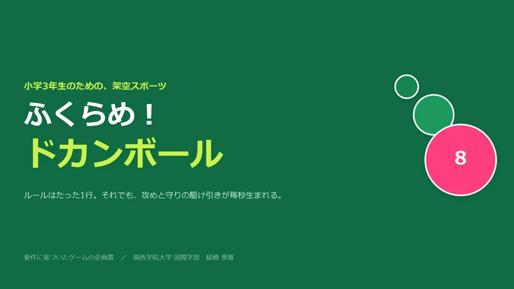
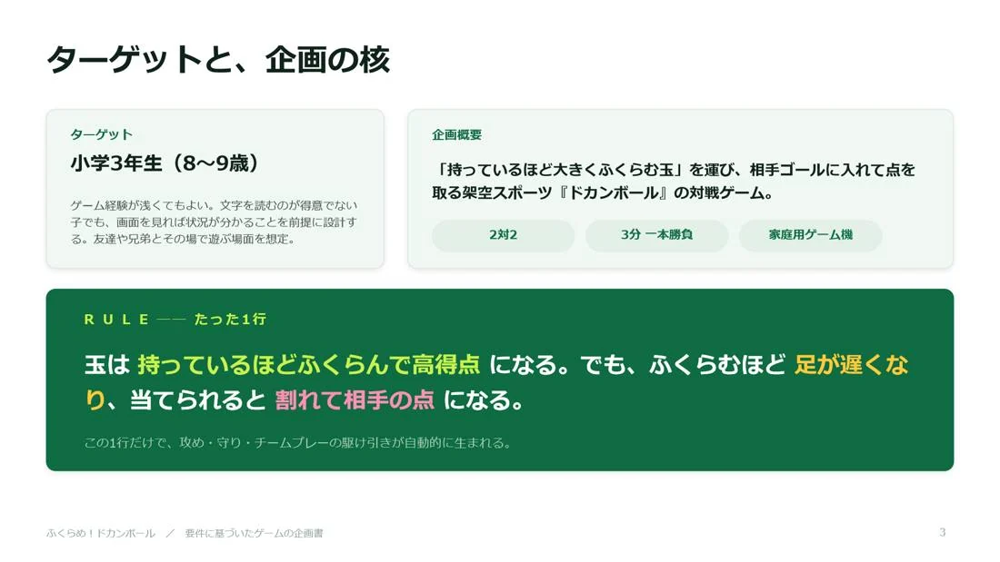

ふくらめ！ドカンボール
要件企画書 / 小学3年生向け・3分で決着する架空のスポーツ
「小学3年生」「架空のスポーツ」「3分で決着」という3つの要件を分解し、ルールを1行で言い切れるところまで削りました。小学3年生は、覚えることが多いゲームでは最初の3分を越えられません。だから、遊びの深さをルールの数ではなく、たった1つのジレンマから生まれる読み合いで作っています。
玉は持っているほどふくらんで高得点になる。でも、ふくらむほど足が遅くなり、当てられると割れて相手の点になる。
「いつ割るか」の読み合いが、追う側と逃げる側の両方に同時に発生します。ルールを足さずに、遊びだけを広げる拡張案まで書き切りました。

